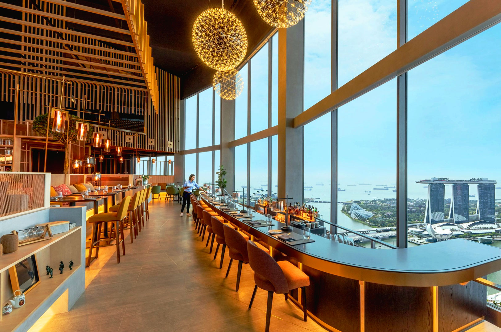

Skyline Grill
Western • Fine Dining
Premium steaks and fresh seafood served with a view of the city skyline.
A smart-casual restaurant, ideal for anniversaries and special
dinners. Reservations are recommended.